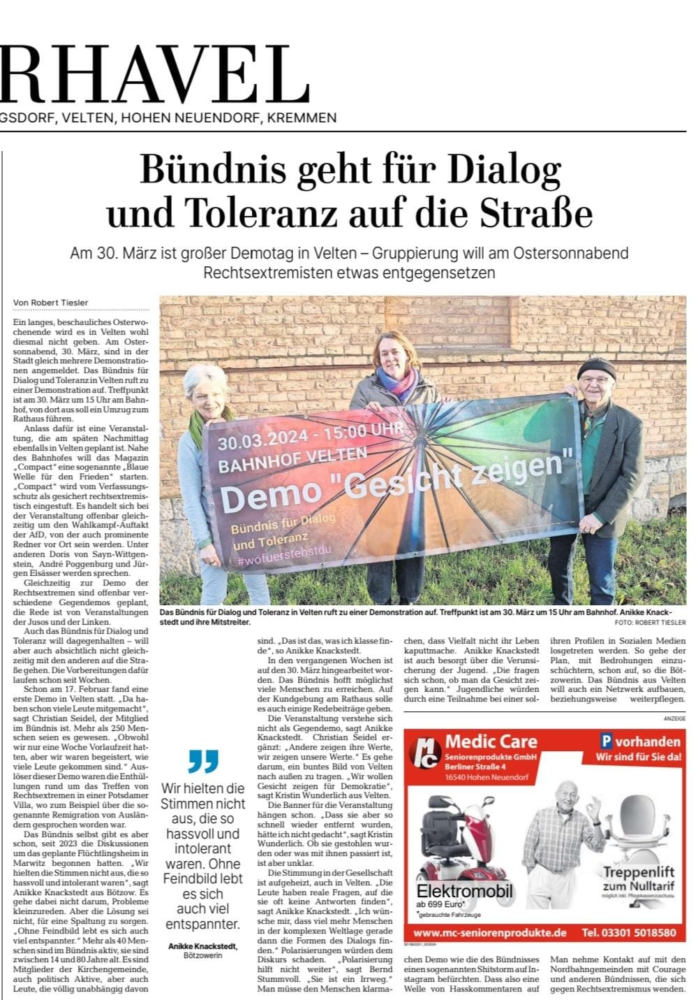
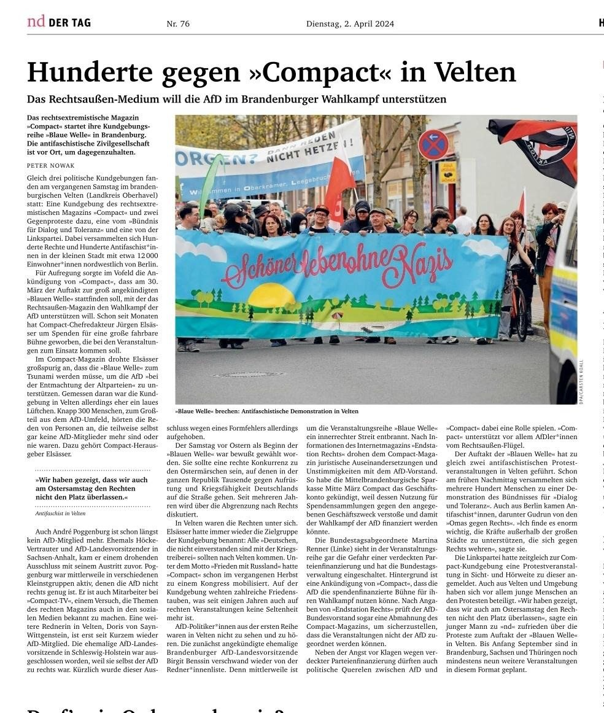
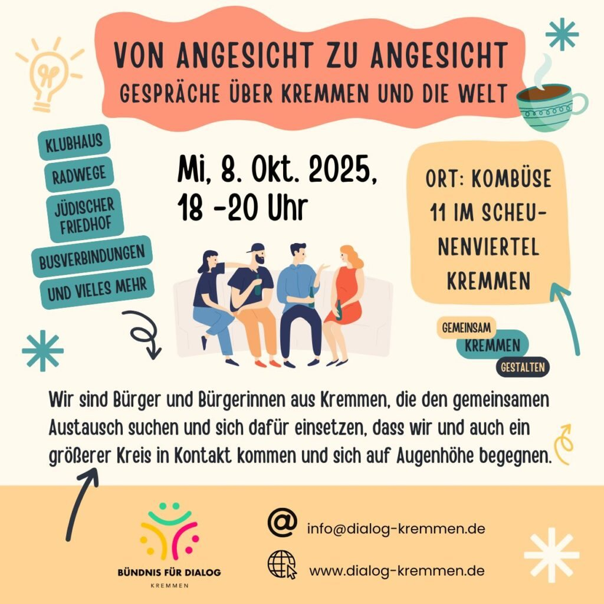

Überuns
Wer wir sind
Wir sind ein Bündnis von engagierten Bürgerinnen und Bürgern, die sich ehrenamtlich für Demokratie und gesellschaftliche Vielfalt einsetzen. Unser Engagement zielt auf die Förderung von Akzeptanz, Inklusion und der Würde des Menschen. Wir haben verschiedene gesellschaftliche, religiöse und politische Hintergründe, es sind ganz unterschiedliche Alters- und Bevölkerungsgruppen vertreten. Uns eint der Wunsch nach Austausch und Vernetzung und dem gemeinsamen Engagement für eine tolerante und inklusive Gesellschaft.
Presse und Veröffentlichungen


Termine
Alle kommenden und vergangenen Termine im Überblick
Einladungen und Hinweise
Am ersten Montag im Monat treffen wir uns um 19.00 Uhr im Gemeindezentrum der ev. Kirchengemeinde in Velten, Breite Str.17
Veranstaltungshinweise
Aus dem Netzwerk
Das Bündnis für Dialog in Kremmen lädt ein:

Netzwerk
Gemeinsam für eine akzeptierende Gesellschaft